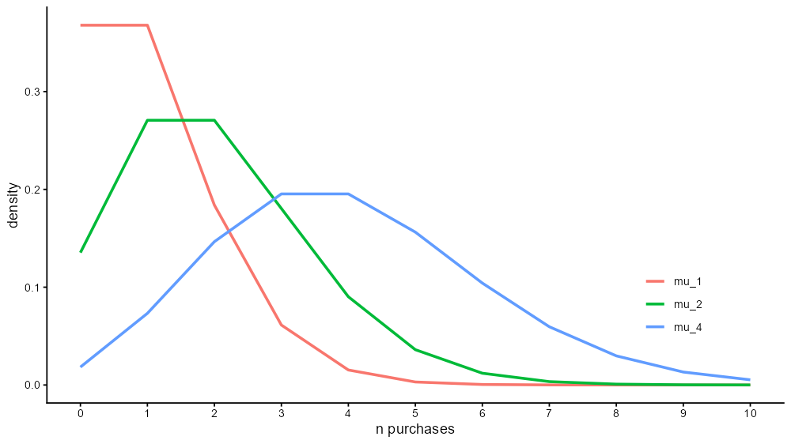

%%{init: {'theme': 'neutral', 'flowchart': {'htmlLabels': false}} }%%
flowchart TD
A["Category purchase rate (μ, k)<br/>→ Negative Binomial"]
A --> B["Observed zero-class probability P(0)<br/>and<br/>Penetration = 1 − P(0)"]
B --> C["Brand choice probabilities (s₁ … sₘ)<br/>→ Dirichlet"]
C --> D["Predictions for each brand:<br/>• Market share<br/>• Brand penetration<br/>• Repeat buying<br/>• Duplication of purchase"]
style D text-align:left
The Negative Binomial–Dirichlet Model
Introduction
The Negative Binomial Distribution (NBD) and the Dirichlet distribution together form the statistical foundation of modern marketing science.
They underpin the analyses presented in How Brands Grow (Sharp, 2010) and explain regular patterns such as brand penetration, repeat purchasing, and Duplication of Purchase (DoP).
The combined model is known as the NBD–Dirichlet model.
1 Purchase Incidence — The Negative Binomial Distribution
The Negative Binomial Distribution models the number of purchases per person in a given period for a whole product category.
It assumes:
- Each individual has their own average purchase rate, given by mu, ( \(\mu_i\) ), or lambda, ( \(\lambda_i\) ),
- Across people, ( \(\lambda_i\) ) follows a Gamma distribution (\(\Gamma(\cdot)\)),
- Purchases for each individual follow a Poisson process.
A Gamma distribution ( \(\Gamma(\cdot)\) ) looks like this:

A Poisson distribution is a probability distribution that describes the number of events that occur within a fixed interval of time or space. If mu (\(\mu\)) is the mean occurrence per interval, then the probability of having \(x\) occurrences within a given interval is:
\[ P(X=x) = \frac{e^{−\mu} \cdot \mu^{k}}{k!} \]
\(P(X=x)\) represents the probability of observing \(x\) events.
\(e\) is the base of the natural logarithm.
\(\mu\) (mu) is the average rate of event occurrences in a fixed time period.
\(x\) is the actual number of events observed - integers obviously.
\(k!\) denotes the factorial of \(k\), which is the product of all positive integers up to \(k\). That is, (\(1 \times 2 \times 3 \times \dots \times k\)).
The Poisson density function looks like this:

(We use line charts here for ease of viewing three Poisson distributions: Ordinarily, we would use bar-charts to show integer values on the x-axis. We can’t have “half an event”)
Mixing the Gamma and Poisson distributions yields the Negative Binomial.
1.1 Negative Binomial Formula
\[ P(X = x) = \frac{\Gamma(x + k)}{\Gamma(k)\, x!} \left(\frac{k}{k + \mu}\right)^{k} \left(\frac{\mu}{k + \mu}\right)^{x}, \quad x = 0,1,2,\ldots \]
where:
| Symbol | Meaning |
|---|---|
| \(X\) | Number of purchases per person per period |
| \(\mu\) | Mean purchase rate per person |
| \(k\) | Dispersion (heterogeneity) parameter |
| \(\Gamma(\cdot)\) | Gamma function |
The mean and variance are:
\[ E[X] = \mu, \qquad Var[X] = \mu\left(1 + \frac{\mu}{k}\right) \]
1.2 Zero-Class Probability
The probability that a randomly chosen person makes zero purchases is:
\[ P(0) = \left(\frac{k}{k+\mu}\right)^k \]
Hence, the category penetration is:
\[ \text{Penetration} = 1 - P(0) \]
| Concept | Interpretation |
|---|---|
| \(P(0)\) | Proportion of people who make no purchases |
| \(1 - P(0)\) | Proportion of people who make at least one purchase |
| \(k\) | Degree of heterogeneity — smaller (\(k\)) means greater variability |
2 Brand Choice — The Dirichlet Component
Once we know how often people buy the category, we can model which brand they buy.
The Dirichlet distribution models how individuals allocate their purchases across brands.
| Symbol | Meaning |
|---|---|
| \(s_i\) | Market share of brand ‘i’ |
| \(m\) | Number of competing brands |
| \(\alpha_i\) | Dirichlet parameter for brand ‘i’ |
Each consumer has a personal probability vector (\(p_1, p_2, \dots, p_m\)) representing their purchase probabilities across brands,
and across consumers these follow a Dirichlet distribution:
\[ (p_1, \dots, p_m) \sim \text{ Dirichlet }( \alpha_1, \dots, \alpha_m ) \]
Combining the NBD (purchase incidence) with the Dirichlet (brand choice) gives the NBD–Dirichlet model.
This combined model predicts:
- Brand penetration (how many people buy each brand),
- Purchase frequency per buyer,
- Duplication of purchase (brand overlap),
- Market share and loyalty patterns.
3 How the Two Components Fit Together
| Concept | Source | Description |
|---|---|---|
| \(\mu\) | NBD | Mean category purchase rate per person |
| \(k\) | NBD | Dispersion (heterogeneity) parameter |
| \(P(0)\) | NBD | Probability of zero category purchases |
| \(1 - P(0)\) | NBD | Category penetration |
| \(s_i\) | Dirichlet | Market share of brand \('i'\) |
| \(\alpha_i\) | Dirichlet | Shape parameter proportional to brand share |
| Brand penetration | NBD–Dirichlet | % of people who buy brand \('i'\) at least once |
| Duplication of purchase | NBD–Dirichlet | % of buyers of Brand A who also buy Brand B |
3.1 Visual Summary
4 Interpretation and Marketing Insights
“Growth comes from increasing penetration, not from chasing loyalty.”
— How Brands Grow, Byron Sharp (2010)
The NBD–Dirichlet model demonstrates that many brand performance patterns are statistical regularities rather than unique
Key insights:
- Big brands have more buyers (low \(P(0)\)) and slightly higher repeat-purchase rates.
- Small brands have fewer buyers (high \(P(0)\)) and slightly lower repeat-purchase rates.
- Buyer behaviour differences largely reflect market share and penetration, not deep attitudinal differences.
These principles explain two major empirical “laws” of marketing:
4.1 Double Jeopardy
Small brands suffer twice: they have fewer buyers (low penetration) and those buyers are slightly less loyal.
| Brand Type | Penetration | Purchase Frequency (per buyer) | Illustration |
|---|---|---|---|
| Large | High | Slightly higher | e.g. Coca-Cola |
| Small | Low | Slightly lower | e.g. Dr Pepper |
This pattern arises naturally from the NBD–Dirichlet model and is not a sign of marketing failure.
4.2 Duplication of Purchase
Brands “share” their buyers roughly in proportion to other brands’ market shares:
Buyers of Brand A are more likely to buy Brand B if Brand B is large.
Mathematically, the Duplication of Purchase (DoP) rate is predictable from the Dirichlet component:
\[ \text{DoP}_{A,B} \approx s_B \left(\frac{1 - p_A}{1 - s_A}\right) \]
where
\(s_B\) = market share of brand B,
\(p_A\) = penetration of brand A,
\(s_A\) = market share of brand A.
5 Estimating Parameters
Practical estimation steps:
5.1 Step 1 — Estimate Category Parameters
From purchase or panel data:
Zero-Class Probability \(P(0)\):
\[ P(0) = \frac{\text{Number of non-buyers}}{\text{Total people}} \]
Average category purchases:
\[ \mu = \text{Average category purchases per person (including zeros)} \]
Then solve numerically for (\(k\)) in:
\[ P(0) = \left(\frac{k}{k+\mu}\right)^k \]
This can be done using Goal Seek or Solver in MS Excel or by numerical root-finding in R.
5.2 Step 2 — Estimate Brand Parameters
From brand-level data:
- Market shares (\(s_i\))
- Number of brands (\(m\))
These feed into the Dirichlet component, which models how total category purchases are divided across brands.
5.2.2 Step 1 — Compute individual parameters
Given market shares \(s_i\) and chosen \(\alpha_0\):
\[ \alpha_i = \alpha_0 s_i, \qquad \sum_{i=1}^{4} \alpha_i = \alpha_0 = 20. \]
5.2.3 Step 2 — Write the Dirichlet PDF
\[ f(p_1, p_2, p_3, p_4) = \frac{1}{B(8,5,4,3)} \; p_1^{8-1} p_2^{5-1} p_3^{4-1} p_4^{3-1}, \qquad \sum_i p_i = 1, \; p_i > 0. \]
where the normalising constant \(B(8,5,4,3)\) is:
\[ B(8,5,4,3) = \frac{\Gamma(8)\,\Gamma(5)\,\Gamma(4)\,\Gamma(3)}{\Gamma(8+5+4+3)} = \frac{\Gamma(8)\,\Gamma(5)\,\Gamma(4)\,\Gamma(3)}{\Gamma(20)}. \]
5.2.4 Interpretation
This fully specifies the Dirichlet distribution for brand-choice probabilities in this four-brand market.
If we were to draw many samples from this distribution:
- The mean brand shares would remain \(s_i\),
- But the variance and degree of brand duplication would depend on the total concentration \(\alpha_0\).
A smaller \(\alpha_0\) (say 5 instead of 20) would produce simulated markets with more variability in brand loyalty and purchase overlap.
5.2.5 Distinguishing \(\alpha_0\) (Dirichlet) from \(k\) (Negative Binomial)
Although both \(\alpha_0\) and \(k\) describe heterogeneity, they belong to different parts of the NBD–Dirichlet model and have distinct interpretations:
| Parameter | Model component | Describes variation in… | Interpretation |
|---|---|---|---|
| \(k\) | Negative Binomial (NBD) | How often different consumers buy within the category | A small \(k\) means high variation in category purchase frequency — some people buy often, others rarely. |
| \(\alpha_0\) | Dirichlet | How consumers allocate their category purchases across brands | A small \(\alpha_0\) means buyers are more brand-focused (less duplication); a large \(\alpha_0\) means buyers spread purchases more evenly. |
5.2.5.1 Conceptual summary
| Model stage | Governs heterogeneity in | Key parameter | Example implication |
|---|---|---|---|
| Category purchase frequency | how many category purchases consumers make | \(k\) | Two consumers might make 2 vs 20 category purchases in a period. |
| Brand choice behaviour | which brands those purchases go to | \(\alpha_0\) | One consumer may buy almost only Brand A, another spreads across all brands. |
5.2.5.2 Quick intuition
- \(k\) shapes the vertical dimension — variation in how many category purchases people make.
- \(\alpha_0\) shapes the horizontal dimension — variation in how those purchases are shared across brands.
Together they define the market’s structure:
\[ \text{NBD–Dirichlet:} \quad \text{Frequency across consumers (via } k) \;\;+\;\; \text{Brand allocation across brands (via } \alpha_0). \]
5.2.5.3 In practice
When calibrating an NBD–Dirichlet model:
- \(k\) is typically estimated from category-level repeat rates or fitted to the category’s purchase frequency distribution.
- \(\alpha_0\) is estimated from cross-brand duplication and loyalty patterns.
They are independent but complementary — one governs how often people buy, the other what mix of brands they buy.
5.3 Typical Parameter Ranges
| Parameter | Typical Range | Interpretation |
|---|---|---|
| \(\mu\) | 0.5 – 2.0 | Mean number of category purchases per person |
| \(k\) | 0.3 – 2.0 | Dispersion (heterogeneity) smaller → more skewed |
| \(P(0)\) | 0.5 – 0.9 | Proportion of category non-buyers |
| \(1 - P(0)\) | 0.1 – 0.5 | Category penetration |
| \(s_i\) | 0.01 – 0.40 | Market share of brand ‘i’ |
6 Summary of Model Structure
\[ \begin{aligned} P(X = x) & = \text{Negative Binomial for purchase incidence} \\ (p_1,\dots,p_m) & = \text{Dirichlet for brand choice} \\ \text{NBD–Dirichlet} & = \text{Combination predicting market structure} \end{aligned} \]
This framework explains:
- Regularities in brand performance,
- Differences between large and small brands,
- Stable duplication patterns across categories and markets.
6.1 Visualising \(k\) vs \(\alpha_0\): Two Kinds of Heterogeneity
6.1.1 Diagram 1 — Where each parameter acts
%%{init: {'flowchart': {'htmlLabels': true, 'useMaxWidth': true}} }%%
flowchart TD
subgraph NBD["Negative Binomial (category frequency)"]
K["Heterogeneity parameter: k<br/>(smaller k = more spread in how often people buy the category)"]
end
subgraph DIR["Dirichlet (brand allocation)"]
A0["Concentration parameter: α₀<br/>(smaller α₀ = more brand focus; larger α₀ = more even spread across brands)"]
end
F["Observed frequency patterns<br/>(zeros, light/heavy buyers)"]
M["Observed brand metrics<br/>(duplication, loyalty, repertoire size)"]
K --> F
A0 --> M
F --> O["Market outcomes"]
M --> O
6.1.2 Diagram 2 — “Two-axis” intuition (vertical = \(k\), horizontal = \(\alpha_0\))
%%{init: {'flowchart': {'htmlLabels': true, 'useMaxWidth': true}} }%%
flowchart TD
T["Category purchases per person<br/>(vertical spread set by k)"]
L["Brand mix within those purchases<br/>(horizontal spread set by α₀)"]
subgraph AXIS["Two independent sources of heterogeneity"]
T --- L
end
T --> EX1["Smaller k → more light & heavy buyers<br/>(more zeroes and extremes)"]
L --> EX2["Smaller α₀ → stronger brand focus<br/>(lower duplication; higher observed loyalty)"]
EX1 --> OBS["Observed market patterns"]
EX2 --> OBS
6.1.2.1 Quick recap
| Parameter | Layer | What varies | Lower value implies… | Higher value implies… |
|---|---|---|---|---|
| \(k\) | NBD (category frequency) | How often people buy the category | More dispersion (more light & heavy buyers; higher \(P(0)\)) | More homogeneity (buyers cluster around the mean) |
| \(\alpha_0\) | Dirichlet (brand allocation) | How purchases are split across brands | More brand focus (lower duplication, higher observed loyalty) | More even spread (higher duplication, similar repertoires) |
Rule of thumb.
Think vertical for \(k\) (how many category purchases) and horizontal for \(\alpha_0\) (how those purchases are shared across brands). They’re independent but complementary.
7 Understanding “Penetration” in the Dirichlet Model
The term penetration can mean two very different things in marketing.
In the Dirichlet model, it refers to buyer penetration — not retail or distribution penetration.
7.1 Buyer Penetration (Dirichlet definition)
In the NBD–Dirichlet framework, penetration is:
The proportion of all category buyers who purchased the brand at least once during the period.
Formally:
\[ p_i = \frac{\text{Number of category buyers who bought brand } i}{\text{Total number of category buyers}} \]
It describes how many people bought, not how many times they bought, and not how many stores stock the brand.
7.1.1 Example
If 10,000 people bought chocolate bars this year and
7,000 of them bought KitKat at least once,
then KitKat’s penetration = 70%.
Penetration is a key driver in the Dirichlet system because:
\[ \text{Market share} \approx p_i \times \text{Average purchase rate (among buyers)} \]
So, brands grow mainly by gaining more buyers, not by dramatically increasing loyalty or purchase frequency.
7.2 Retail or Numeric Penetration (Physical Availability)
In retail metrics, penetration (also called numeric distribution) means something else:
The proportion of retail outlets that stock the brand at least once during a period.
\[ \text{Retail penetration} = \frac{\text{Number of stores carrying the brand}}{\text{Total stores selling the category}} \]
This is a supply-side measure of physical availability, not a consumer behaviour measure.
7.3 How the Two Meanings Relate
| Concept | What it measures | Data source | Used in the Dirichlet model? |
|---|---|---|---|
| Buyer penetration | % of category buyers who purchased the brand | Consumer panel or survey | ✅ Yes |
| Retail penetration | % of outlets stocking the brand | Retail audit or scanner data | ❌ No |
Retail penetration enables buyer penetration — a brand must be available in stores before consumers can buy it — but the Dirichlet model itself only uses buyer penetration to explain market-level patterns such as market share, duplication of purchase, and loyalty.
7.4 Summary
| Term | In plain English | In Dirichlet modelling |
|---|---|---|
| Buyer penetration | % of people who bought the brand | Core input/output |
| Retail penetration | % of stores that stock the brand | External driver |
| Market share | % of category volume sold by the brand | Derived outcome |
In short:
- Retail penetration reflects availability;
- buyer penetration reflects actual buying.
The Dirichlet model focuses on the latter — the behaviour of people, not stores.
8 Common Misunderstandings about the Dirichlet Model
Users sometimes confuse the Dirichlet model with psychological or managerial theories of consumer behaviour.
The table below highlights some typical misconceptions and the correct interpretations.
| Misunderstanding | Clarification |
|---|---|
| 1. “Penetration means how many stores stock the brand.” | In the Dirichlet model, penetration refers to buyers, not stores — the % of people who bought the brand at least once in a given period. Retail distribution is a separate measure of physical availability. |
| 2. “Loyalty drives market share.” | It’s the opposite: market share (penetration) largely determines observed loyalty. Larger brands have slightly higher repeat rates simply because they have more buyers, not because their buyers are intrinsically more loyal. |
| 3. “People are assumed to buy at random, so advertising doesn’t matter.” | The model assumes statistical independence, not psychological randomness. Advertising, distinctive assets, and availability all influence the probabilities of brand choice — they shift the parameters (\(s_i\), \(p_i\)). |
| 4. “If the laws always hold, marketing research is pointless.” | The laws describe expected patterns, not tactical details. Research helps diagnose deviations (e.g., low penetration vs share, weak duplication) and guides execution — such as which category entry points to strengthen. |
| 5. “The Dirichlet predicts individual behaviour.” | It predicts aggregate probabilities, not who personally will switch brands. It’s a model of markets, not personalities. |
| 6. “Small brands should focus on building loyalty before reach.” | In reality, almost all growth comes from gaining more buyers. Loyalty rises automatically once penetration increases. |
| 7. “Categories with subscriptions or infrequent purchases break the model.” | The same patterns emerge when analysed over an appropriate time frame (e.g., contract renewal cycles, multi-year purchases). Purchase opportunities differ, but the underlying heterogeneity logic remains valid. |
| 8. “Dirichlet models only apply to groceries.” | The empirical laws hold across services, durables, B2B, and luxury — anywhere people have repeat or substitute buying opportunities. |
8.1 Key Reminder
NoteHow to Think About the Dirichlet
The Dirichlet model doesn’t explain why people buy — it describes how buyers collectively behave in steady-state markets.
Its purpose is descriptive, predictive, and diagnostic, not psychological.
Use it to test whether brand data fit expected norms, and to identify genuine marketing anomalies.
9 Modelling the Effects of Mental Availability in the NBD Framework
An increase in mental availability — for example, after an effective advertising campaign — can be represented within the Negative Binomial Distribution (NBD) model as a change in a brand’s probability of being chosen.
In the combined NBD–Dirichlet system, mental availability affects the Dirichlet layer (how purchases are divided among brands), but its observable effects appear through the NBD layer, which predicts buyer penetration and purchase frequency.
9.1 Where Mental Availability Fits
| Model layer | Describes | Key parameters | Connection to marketing |
|---|---|---|---|
| NBD (Negative Binomial) | Variation in category buying frequency across consumers | \(\mu, k\) | Category buying patterns |
| Dirichlet | Allocation of those purchases across brands | \(s_i\) (brand share of buying occasions) | Brand mental & physical availability |
When advertising improves a brand’s mental availability, it increases its probability of being chosen at each buying occasion — captured by \(s_i\).
9.2 How the NBD Predicts Penetration
In the NBD model, the probability of a consumer making zero purchases of a given brand in the period is:
\[ P(0) = \left(\frac{k}{k + s_i \mu}\right)^k \]
Therefore, the buyer penetration (probability of at least one purchase) is:
\[ \text{Penetration} = 1 - P(0) \]
An increase in \(s_i\) — due to higher brand salience or mental availability — reduces \(P(0)\), meaning more category buyers now buy the brand.
9.3 What Information the Model Needs
| Parameter | Description | Typical data source |
|---|---|---|
| \(\mu\) | Average number of category purchases per buyer per period | Panel data or market totals |
| \(k\) | Dispersion parameter (heterogeneity of buying rates) | Estimated from category data |
| \(s_i\) | Brand’s share of category purchase occasions | Market share or assumed change |
| \(N\) | Total number of category buyers | Sets the base for buyer counts |
| \(\Delta s_i\) | Change in share due to mental availability increase | Estimated effect of advertising |
9.4 Example: Simulating a Mental Availability Lift
| Parameter | Before campaign | After campaign | Comment |
|---|---|---|---|
| Category mean purchases (\(\mu\)) | 6.0 | 6.0 | Category constant |
| Dispersion (\(k\)) | 2.0 | 2.0 | Stable heterogeneity |
| Brand share (\(s_i\)) | 0.20 | 0.25 | Mental availability ↑ 25% |
| \(P(0) = \left(\frac{k}{k + s_i \mu}\right)^k\) | 0.56 | 0.46 | Fewer non-buyers |
| Penetration (\(1 – P(0)\)) | 0.44 | 0.54 | Buyer base ↑ 10 points |
| Expected share | 20% | 25% | Matches assumed lift |
An increase in mental availability (here, a 25% increase in recall or consideration) translates into:
- noticeably higher penetration, and
- a proportional lift in market share — exactly as predicted by How Brands Grow.
9.5 Summary Interpretation
| Concept | Direction of effect | Marketing meaning |
|---|---|---|
| ↑ Mental availability | ↑ \(s_i\) | More likely to be chosen |
| ↑ \(s_i\) | ↓ \(P(0)\) | Fewer non-buyers → higher penetration |
| ↑ Penetration | ↑ Market share | Growth through more buyers |
In short: Advertising and distinctive assets expand mental availability, which mathematically increases a brand’s choice probability \(s_i\).
Through the NBD, this produces measurable gains in buyer penetration and market share, even when the category’s total purchasing rate (μ) and heterogeneity (k) remain constant.
Appendix
Technical explanation that no-one is expected to read.
The Dirichlet–Multinomial Link
The Dirichlet is a prior on brand choice probabilities.
If each shopper has her own probability vector
\[ (p_1, p_2, \dots, p_m) \sim \text{Dirichlet}(\alpha_1, \alpha_2, \dots, \alpha_m), \]
then conditional on those probabilities, the shopper’s actual purchase realisations across brands in a period follow a multinomial distribution.
That is, if the shopper makes \(x\) total purchases in the category in the period, and we observe counts for each of \(m\) brands \((x_1, x_2, \dots, x_m)\) with \(\sum_{i=1}^m x_i = x\), then:
\[ P(x_1, \dots, x_m \mid p_1, \dots, p_m, x) = \frac{ x! }{ \prod_{ i=1 }^m x_i!} \prod_{ i=1 }^m p_i^{ x_i }. \]
Its probability density function (PDF) is:
\[ f(p_1 , \dots , p_m \mid \, \alpha_1, \dots, \alpha_m) = \frac{ 1 }{ B( \alpha_1 , \dots , \alpha_m)} \prod_{ i=1 }^m p_i^{ \alpha_i - 1 } \]
where:
- \(\quad \sum_{ i=1 }^m p_i = 1\)
- \(\quad p_i > 0\)
and the normalising constant \(B(\cdot)\) (the multivariate Beta function) is:
\[ B( \alpha_1, \dots, \alpha_m ) = \frac{ \prod_{i=1}^m \Gamma( \alpha_i )} { \Gamma \! \left ( \sum_{i=1}^m \alpha_i \right) } \]
where:
- \(p_i\) = Proportion of purchases allocated to brand \(i\)
- \(\alpha_i\) = Dirichlet shape parameter for brand \(i\)
- \(B(\cdot)\) = Multivariate Beta function ensuring the distribution integrates to 1
Now we integrate out the unobserved personal probabilities \((p_1,\dots,p_m)\) by using the Dirichlet prior.
This yields the Dirichlet–multinomial distribution:
\[ P(x_1, \dots, x_m \mid \alpha_1, \dots, \alpha_m, x) = \frac{x!}{\prod_{i=1}^m x_i!} \, \frac{\Gamma\!\left(\sum_{i=1}^m \alpha_i\right)} {\Gamma\!\left(x + \sum_{i=1}^m \alpha_i\right)} \prod_{i=1}^m \frac{\Gamma(x_i + \alpha_i)}{\Gamma(\alpha_i)}. \]
Key points:
- (\(x_i\)) = number of purchases of brand ‘i’ made by this person in the period
- (\(x = \sum_i x_i\)) = total category purchases for this person in the period
- (\(\alpha_i\)) = Dirichlet shape parameters, typically proportional to long-run brand shares
- (\(\Gamma(\cdot)\)) = gamma function
This distribution gives the probability of observing a particular “basket split” across brands, for a given total number of purchases \(x\), without needing to know that shopper’s individual loyalties explicitly. The \(\alpha_i\) encode typical brand attractiveness / repertoire weights at the population level.
Connecting to the NBD–Dirichlet
We now have two layers:
- How many category purchases are made?
The total category purchase count \(X\) for a shopper follows a Negative Binomial with parameters \((\mu, k)\):
\[ P(X = x) = \frac{\Gamma(x + k)}{\Gamma(k)\, x!} \left(\frac{k}{k + \mu}\right)^k \left(\frac{\mu}{k + \mu}\right)^x, \quad x = 0,1,2,\ldots \]
- How are those \(x\) purchases allocated across brands?
Conditional on \(X = x\), the vector of brand-level counts \((x_1, \dots, x_m)\) with \(\sum_i x_i = x\) follows a Dirichlet–multinomial with parameters \((\alpha_1, \dots, \alpha_m)\):
\[ P(x_1, \dots, x_m \mid X = x) = \frac{x!}{\prod_{i=1}^m x_i!} \cdot \frac{\Gamma\!\left(\sum_{i=1}^m \alpha_i\right)} {\Gamma\!\left(x + \sum_{i=1}^m \alpha_i\right)} \cdot \prod_{i=1}^m \frac{\Gamma(x_i + \alpha_i)}{\Gamma(\alpha_i)}. \]
The full NBD–Dirichlet model is the hierarchical combination:
- First layer (incidence): draw \(X \sim \text{NegBin}(\mu, k)\).
- Second layer (allocation): draw \((x_1,\dots,x_m) \mid X \sim \text{Dirichlet–Multinomial}(\alpha_1,\dots,\alpha_m).\)
This two-stage structure produces the classic Ehrenberg–Bass predictions:
- Penetration of each brand
- Average purchase frequency per brand’s buyers
- Duplication of purchase between brands
- The Double Jeopardy pattern
(small brands have fewer buyers and slightly less loyalty)
Why this matters (intuitively)
The Negative Binomial captures:
“How often do people buy in this category at all?”The Dirichlet–multinomial captures:
“Given that they’re buying, how do they split those purchases across brands?”
That’s the full engine under How Brands Grow.
References
- Sharp, B. (2010). How Brands Grow: What Marketers Don’t Know. Oxford University Press. ISBN 9780195573565 https://doi.org/10.1093/oso/9780195573565.001.0001
- Sharp, B., Kennedy, R., & Sharp, A. (2019). How Brands Grow, Part 2: Emerging Markets, Services, Durables, New and Luxury Brands. Oxford University Press. ISBN 9780195596267 https://doi.org/10.1093/oso/9780195596267.001.0001
- Sharp, B., Wright, M., & Goodhardt, G. J. (2002). Purchase loyalty is polarised, how brand loyalty differs by customer size. Australasian Marketing Journal (AMJ), 10(3), 7–20. https://doi.org/10.1016/S1441-3582(02)70138-5
- Ehrenberg, A. S. C., Uncles, M. D., & Goodhardt, G. J. (2004). Understanding brand performance measures: Using Dirichlet distributions. Journal of Business Research, 57(12), 1307–1325. https://doi.org/10.1016/S0148-2963(03)00041-1
- Goodhardt, G. J., Ehrenberg, A. S. C., & Chatfield, C. (1984).
The Dirichlet: A comprehensive model of buying behaviour.
Journal of the Royal Statistical Society. Series A (General), 147(5), 621–655.
https://doi.org/10.2307/2981578